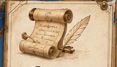
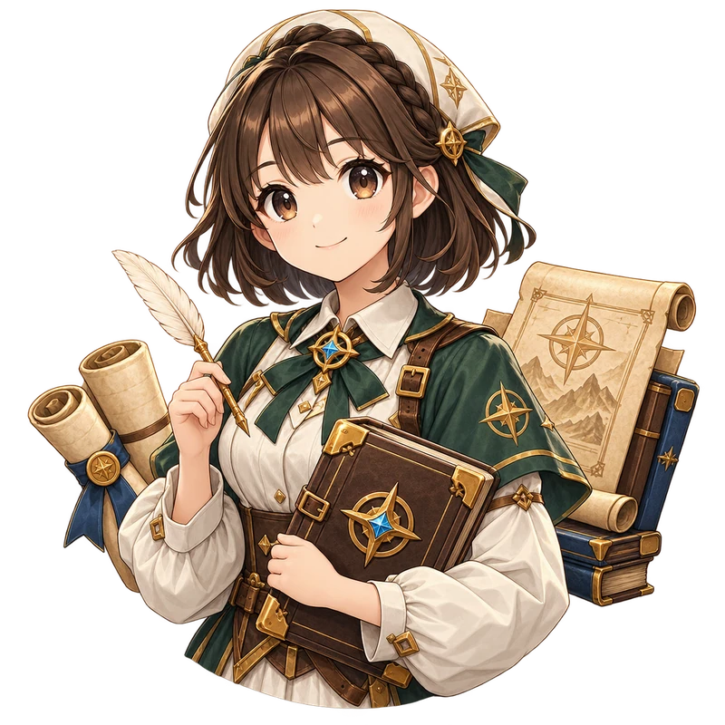
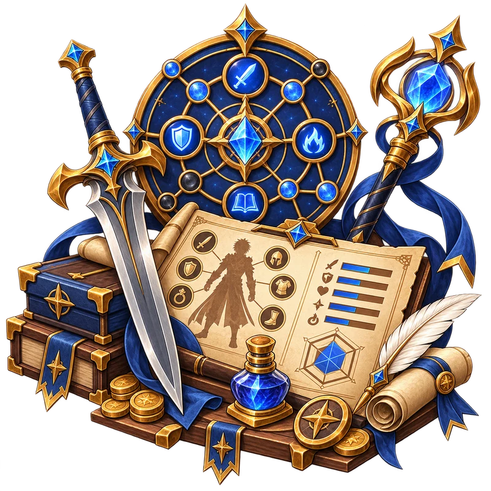
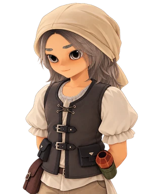
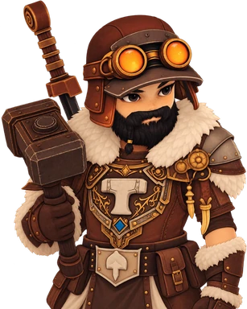

Latest updates
View all →1.1.12
Patch Notes — v1.1.12
Combat, pet, title, collision and item-tradability improvements.
Aug 18, 20261.1.10
Patch Notes — v1.1.10
Magnifying Glass drops, Claw Machine improvements and Server Hop filters.
Aug 14, 2026Your ultimate companion for The Portal.
 ItemsWeapons, armor, materials and more.Explore
ItemsWeapons, armor, materials and more.Explore

QuestsObjectives, rewards and quest chains.Explore
NPCsMerchants, trainers and services.Explore BossesBosses, enemies and documented drops.Explore
BossesBosses, enemies and documented drops.Explore
 CraftingRecipes, materials and calculators.Explore
CraftingRecipes, materials and calculators.Explore

BuildsPlan your build and organize stats.Explore LocationsDiscover documented places.Explore
LocationsDiscover documented places.Explore
Combat, pet, title, collision and item-tradability improvements.
Aug 18, 2026Magnifying Glass drops, Claw Machine improvements and Server Hop filters.
Aug 14, 2026
ArletteJourney Pack Supplies BredaMerchant NPC
BredaMerchant NPC
ErenVerified NPC recordCurrent redemption status has not been re-tested.
PortalDB connects real records for items, quests, NPCs, bosses, locations, mechanics and player tools. Unknown information stays visibly unknown rather than becoming a made-up fact.